如何量化缠中说禅中枢
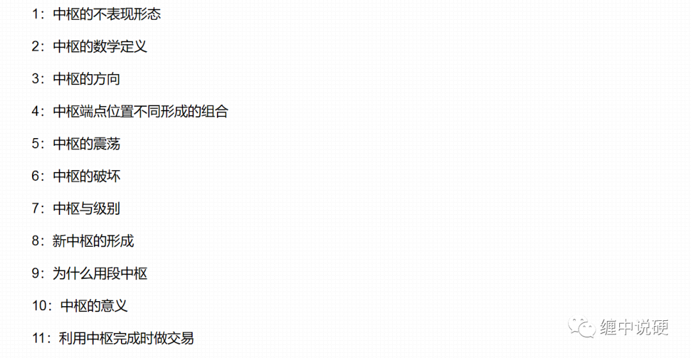
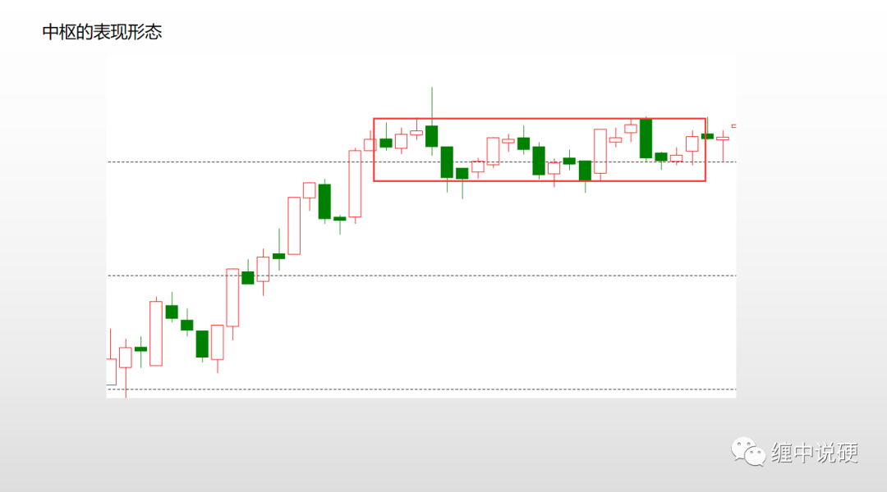
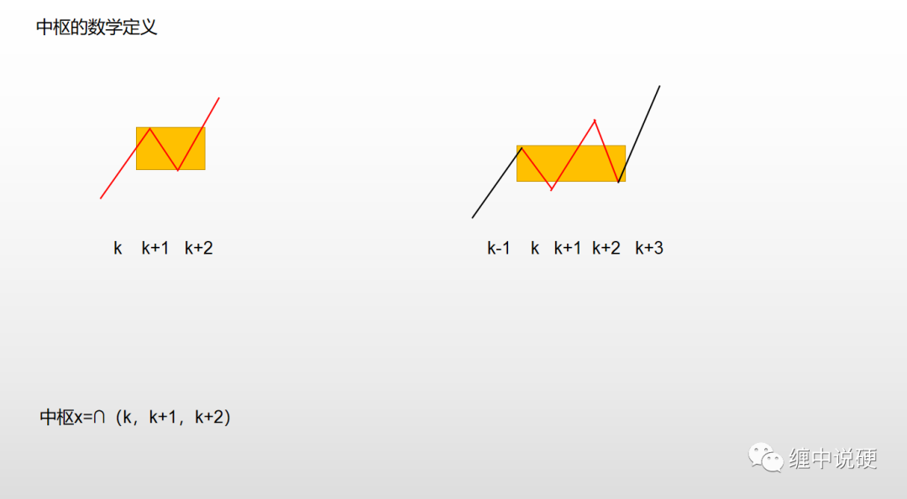
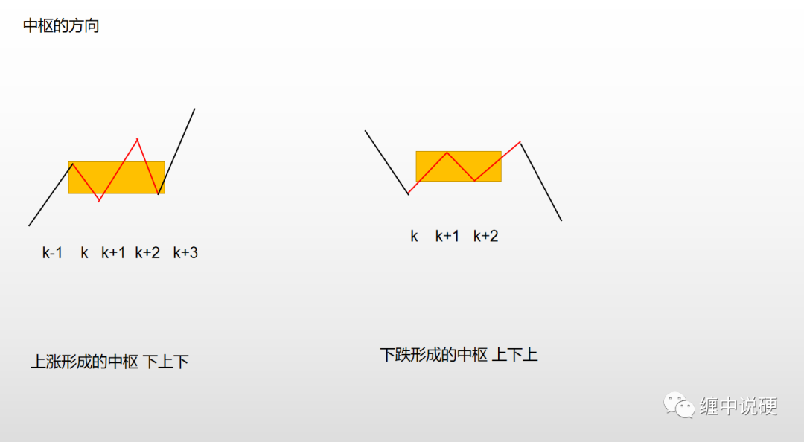
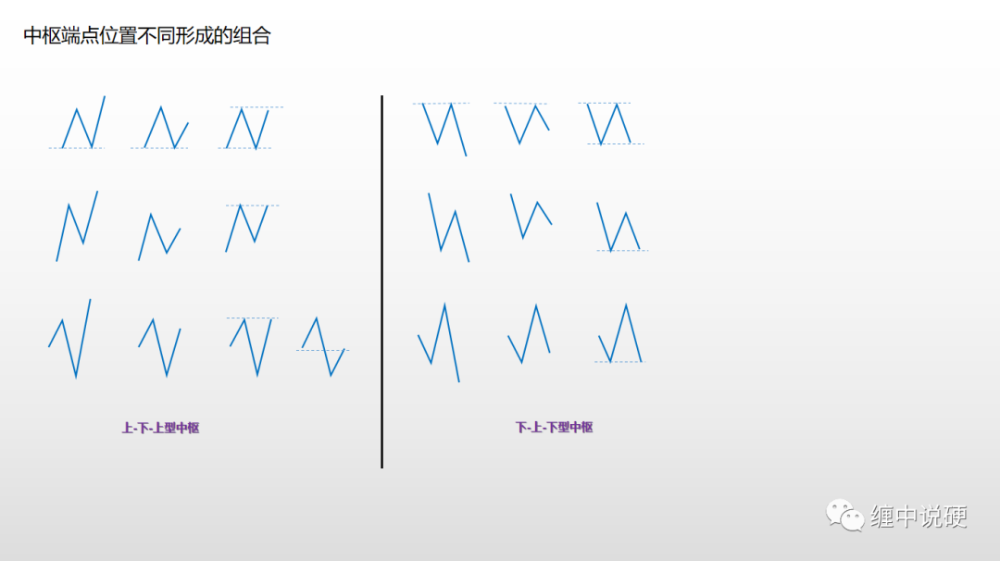
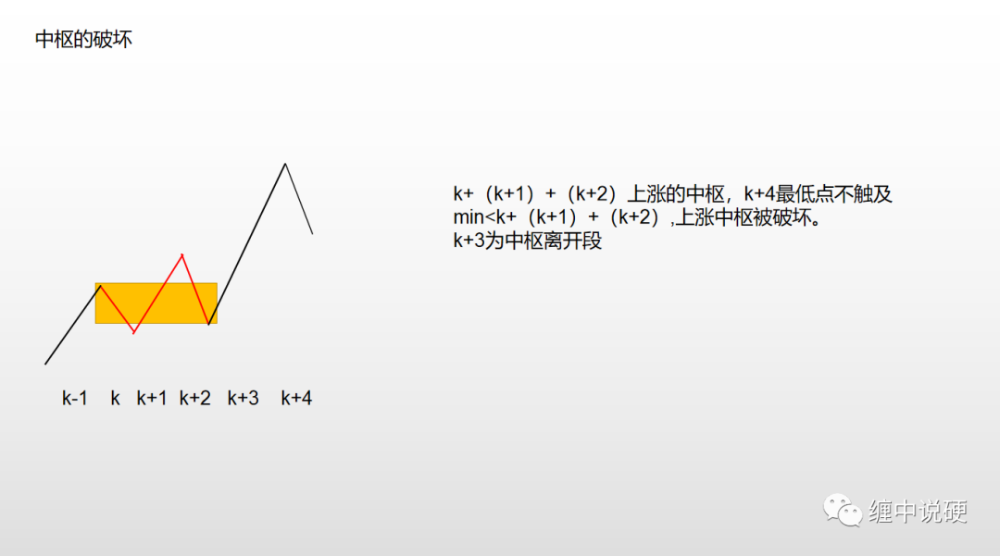
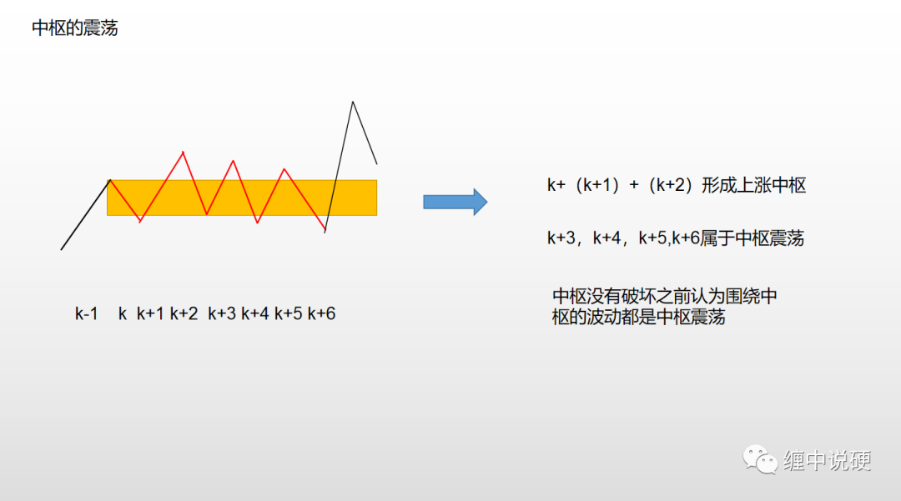
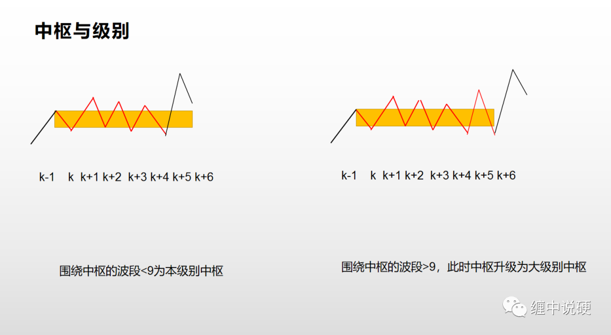
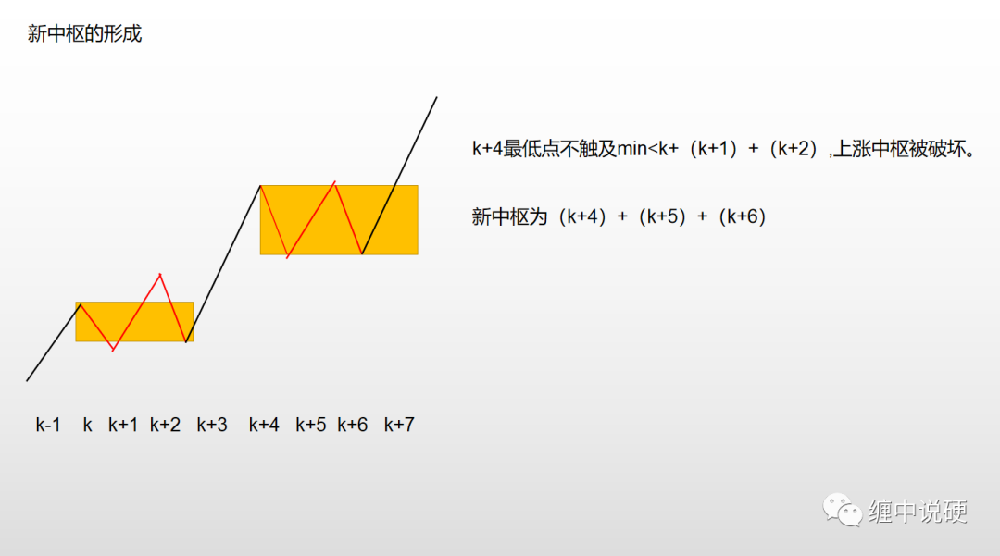
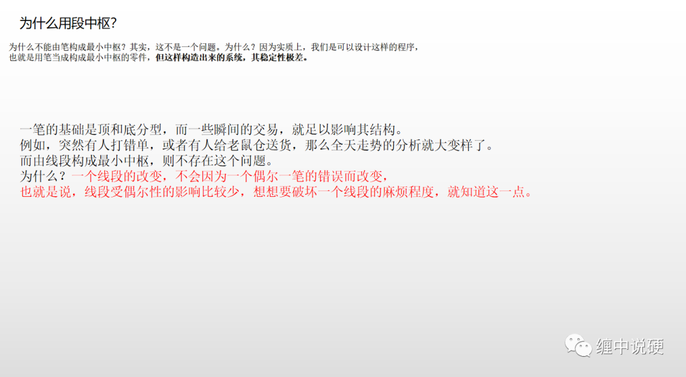
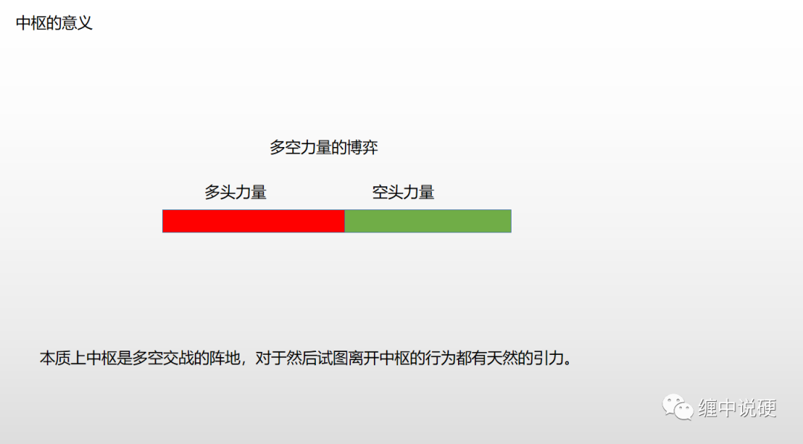
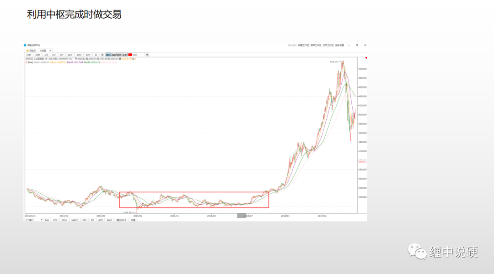
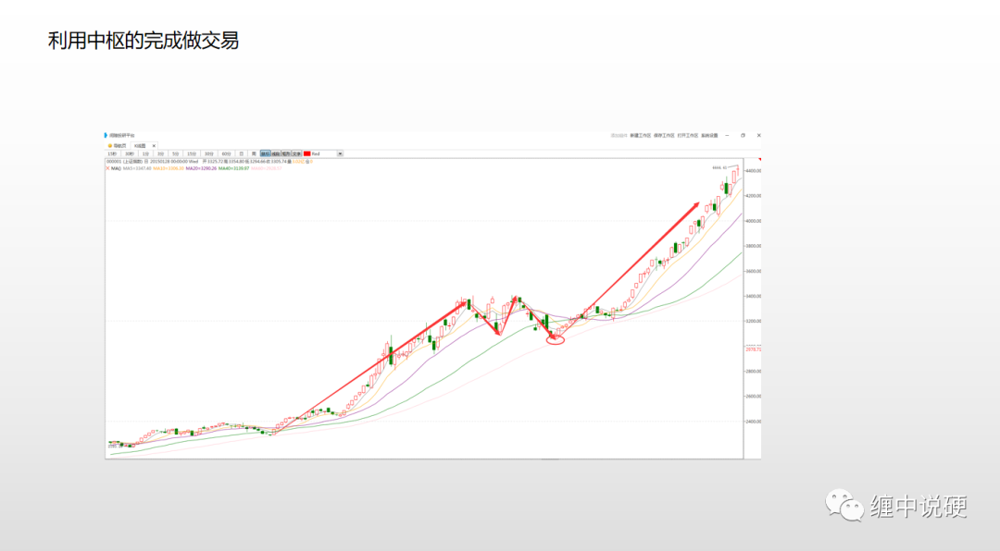
水一下300字：
很多人学缠论，学了不少时间，最后还是一塌糊涂。基本学缠论的都是几十遍的读，逐字逐句的研究，却是把关键的丢失了。缠论是什么？缠论与其它股票理论的最大区别在哪里？缠说了，股票就是看和干，股票是干出来的。好比用气枪打靶，从来没有打过的人开始会百发百中吗？就是再厉害的天才都不能。但如果进行了十万次的射击训练，而且方法得当，就算不枪枪命中靶心，也不会太离谱。而缠还用他自己的经验总结出来的操作方法做教练，具体如何买卖，什么地方买，什么地方卖，1买2买3买，1卖2卖3卖。还告诉散户最好30分钟级别操作，5分钟级别做差价，还说了1分钟级别庄家能操控，5分钟级别就不是那么容易了。为什么很多人用缠论还亏钱？买卖点难找？其实做股票就是个概率的问题，一般学一年缠论，只要不是太离谱，做5分钟级别成功率会在70%以上，但往往就是剩下的2/3成失败，导致自己老亏钱。这里一个是仓位控制的原因，也就是要止损。发现错了立即出来。缠说不止损，是理论的绝对，这世界上唯一绝对的事就是没有绝对的事。赚钱了也要止赢，不要贪心。其实让人亏钱的永远是自己的心。贪婪和恐惧。什么时候克服了贪婪和恐惧，你就开始赚钱了。当然，这个克服不是麻木，套得麻木，亏得麻木。如果这样，最好远离市场。在股市中如果能够克服人心的贪婪与恐惧，再加上足够的经验，什么股票技术都能赚钱。